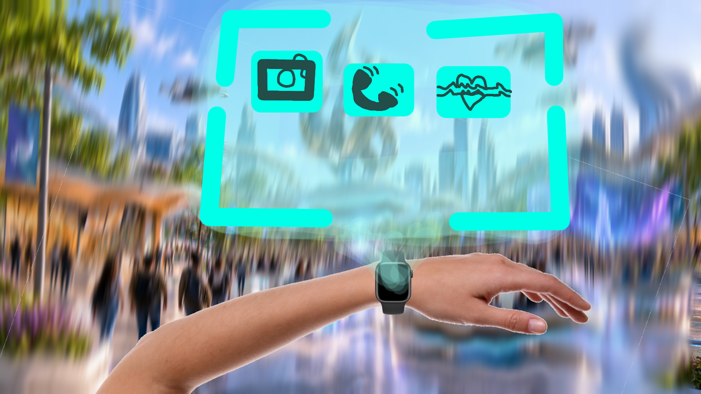

La innovadora forma de comunicación del futuro
Hemos desarrollado una pulsera capaz de proyectar una pantalla interactuable que te permite contactar con nuestros servicios de emergencia, grabar robos o situaciones peligrosas, medir tu estado de salud y es capaz de recibir actualizaciones externas.
Cómo conseguir y usar una pulsera
Las pulseras se entregan a todos los ciudadanos de Cyber City, nuevos o viejos, desde que se inventaron; estas se entregan a los nuevos ciudadanos al entrar a la ciudad (nuestras pulseras son de uso exclusivo para nuestra ciudad). Formas de usar la pulsera: una vez colocada la pulsera, para encenderla tiene que tocar dos veces la pantalla para desplegar el panel holográfico. Por defecto, la pulsera posee las funciones anteriormente mencionadas, como grabar situaciones de peligro, llamar a emergencias y medir tu estado de salud. Para empezar a grabar, seleccione el ícono de la cámara y empezará a grabar; si se detecta una situación muy riesgosa, se enviará ayuda inmediatamente sin necesidad de llamar, para no llamar la atención de algún posible ladrón. Por defecto, la función de llamada llamará automáticamente a emergencias, no permitiéndote llamar a otro número (obtén la actualización de llamadas libres en los lugares designados). Para nuestro medidor de salud, solo toque el ícono del corazón para ver su estado cardiovascular, su azúcar en sangre y su presión arterial; si se detecta algún problema de salud, se enviará un mensaje a emergencias para que se pongan en contacto con usted. Para obtener más funciones de la pulsera, acuda a los lugares designados para descargar actualizaciones (las actualizaciones no nos pertenecen, son creadas por los ciudadanos o las empresas).
